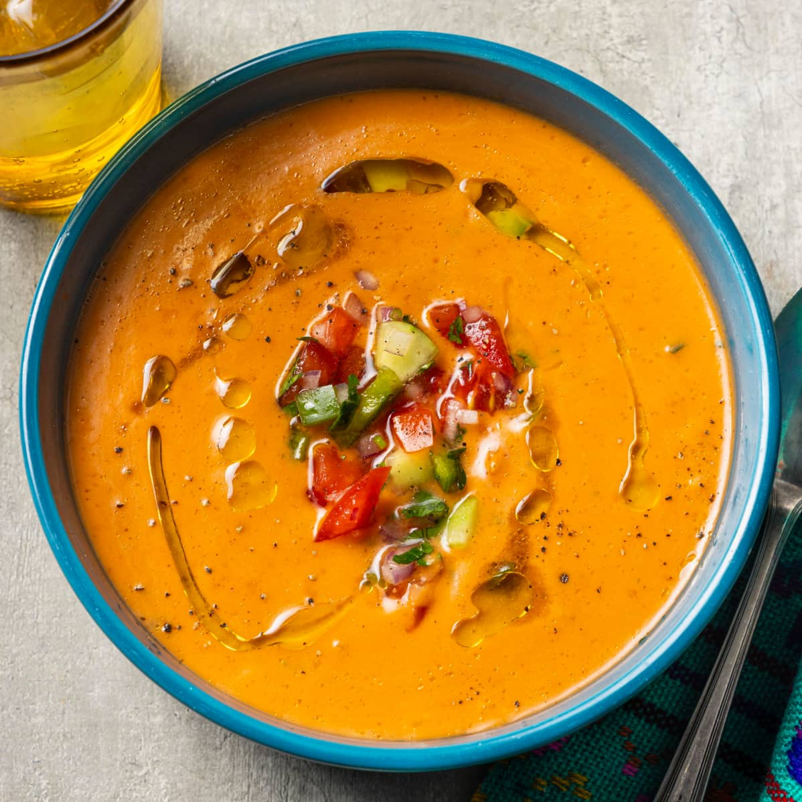
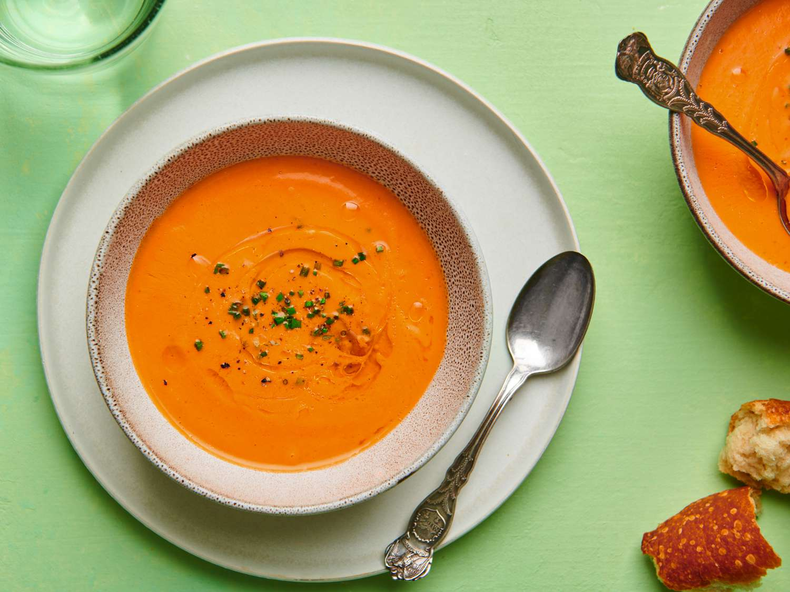
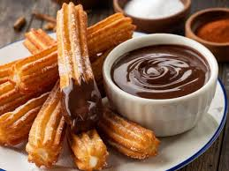
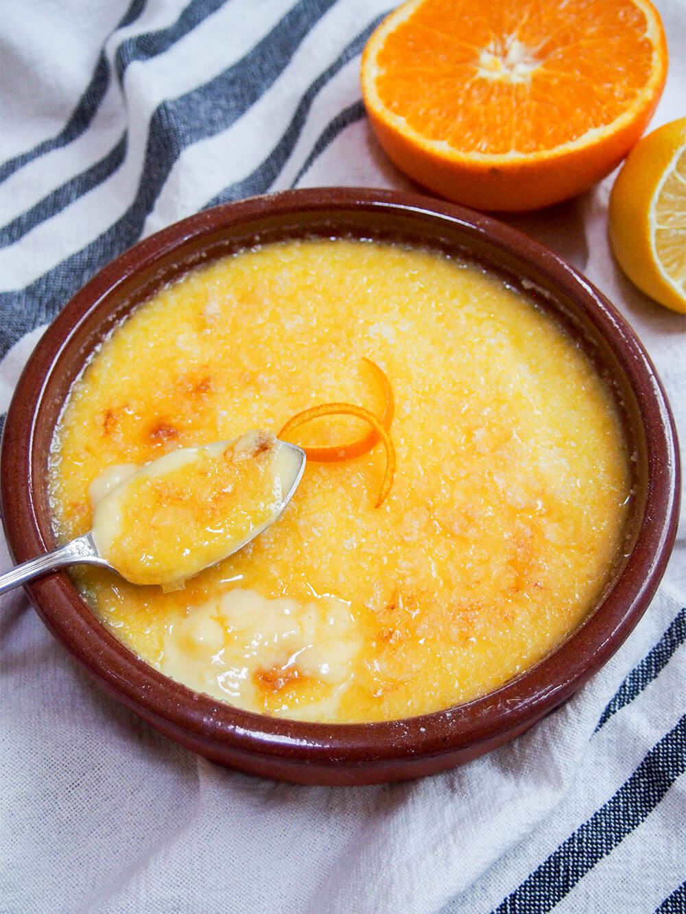
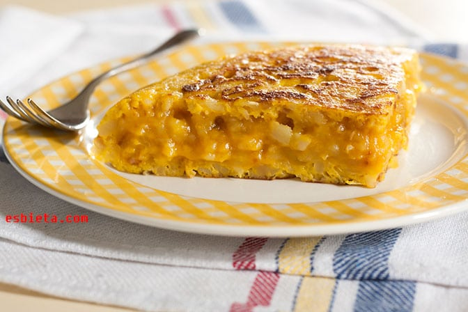
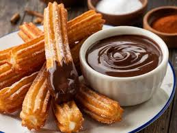
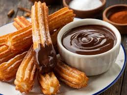
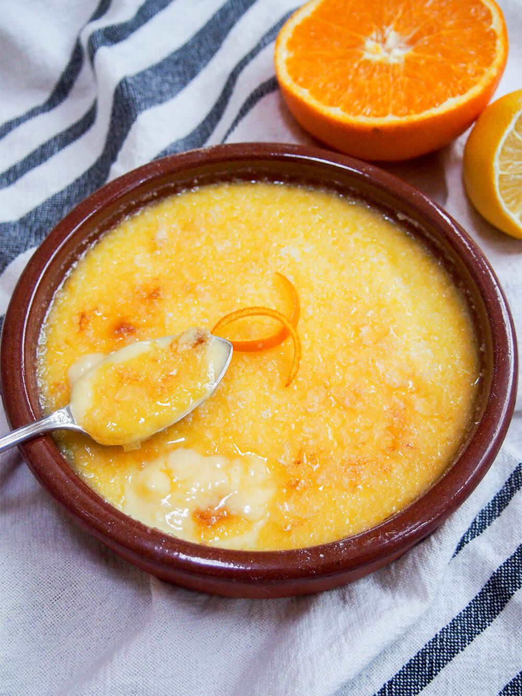
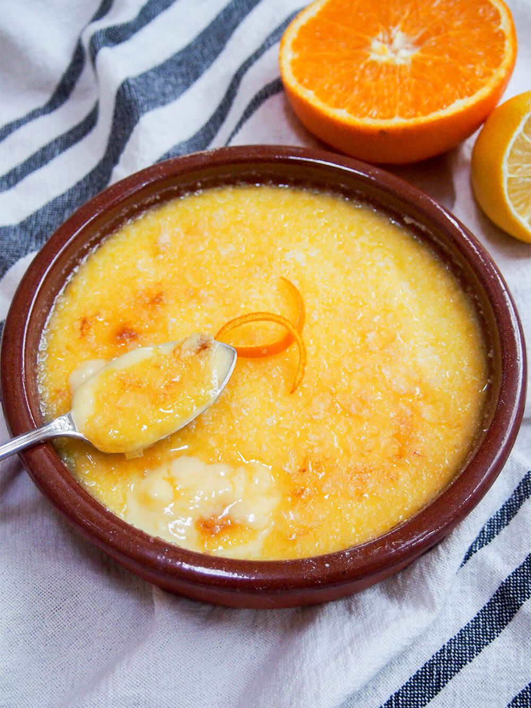

Paella isn’t just a dish — it’s a symbol of Spanish culinary tradition. With its vibrant saffron-infused rice, colorful vegetables,
and an array of meats or seafood, it’s a centerpiece of social gatherings and festive meals. You’ll see families and friends sharing
it straight from the pan, savoring each bite together… because that’s the heart of paella. What makes it iconic is its regional
authenticity: fresh local ingredients, perfectly cooked rice, and the subtle aroma of saffron — nothing fancy, just pure Spanish
craftsmanship. Each variation, whether Valencian, seafood, or mixed, tells a story of the region it comes from. It’s flavorful,
communal, and honestly, one of the best ways to taste the true spirit of Spain. If you want to experience Spain like a local,
start with a steaming pan of paella — it’s unforgettable.
Gazpacho


Gazpacho isn’t just a soup — it’s a refreshing taste of Spanish summer. With its vibrant blend of ripe tomatoes, crisp peppers,
cucumbers, garlic, and a drizzle of olive oil, it’s served chilled to cool and invigorate. You’ll see locals enjoying it in terraces
and family tables, sipping it straight from a bowl or pairing it with crusty bread… because that’s how it’s meant to be savored.
What makes it iconic is its simplicity and freshness: natural ingredients, balanced flavors, and a touch of tradition — nothing
complicated, just pure Andalusian craft. It’s light, revitalizing, and honestly, one of the easiest ways to taste the true spirit
of Spain. If you want to experience Spain like a local, start with a bowl of gazpacho — it’s pure summer in a glass.
Churros con Chocolate

Churros con Chocolate isn’t just a snack — it’s a beloved Spanish ritual. With their golden, crispy exterior and soft, airy interior,
churros are perfect for dipping into rich, velvety hot chocolate. You’ll see people lining up at local churrerías in the morning or
late at night, twirling them into their cups and savoring every bite… because that’s the joy of churros. What makes them iconic is
their simplicity and indulgence: basic dough, fried to perfection, paired with decadent chocolate — nothing fancy, just pure Spanish
tradition. They’re comforting, timeless, and honestly, one of the sweetest ways to taste the true spirit of Spain. If you want to
experience Spain like a local, grab a churro with chocolate — you won’t regret it.
Catalan Cream

Catalan Cream isn’t just a dessert — it’s a symbol of Catalonia’s culinary elegance. With its silky, creamy custard base and a
perfectly caramelized sugar topping, it’s a treat that balances sweetness and texture in every spoonful. You’ll see it served in
cozy cafés and festive dinners, admired for its simple yet refined flavors… because that’s the essence of Catalan Cream. What makes
it iconic is its craftsmanship: fresh ingredients, slow-cooked custard, and a delicate brûlée finish — nothing complicated, just pure
Spanish tradition. It’s smooth, indulgent, and honestly, one of the best ways to taste the true spirit of Catalonia. If you want to
experience Spain like a local, start with a serving of Catalan Cream — it’s unforgettable.
Patatas Bravas
Patatas Bravas isn’t just a tapas dish — it’s a staple of Spanish social dining. With crispy golden potatoes smothered in a spicy,
tangy tomato sauce and sometimes a touch of aioli, it’s a flavor-packed bite that brings people together. You’ll see locals enjoying
them at bustling bars, sharing plates and stories with friends… because that’s the heart of tapas culture. What makes them iconic is
their simplicity and bold taste: just potatoes, sauce, and a bit of spice — nothing fancy, just pure Spanish craftsmanship. They’re
comforting, lively, and honestly, one of the easiest ways to taste the true spirit of Spain. If you want to experience Spain like a
local, order a plate of Patatas Bravas — you won’t be disappointed.
Tortilla de Patatas

Tortilla de Patatas isn’t just an omelette — it’s a cornerstone of Spanish cuisine. With its tender eggs, golden potatoes, and
occasionally a touch of onion, it’s simple, hearty, and incredibly satisfying. You’ll see it served in homes, tapas bars, and at
picnics, often sliced thick and shared among friends… because that’s the essence of Spanish comfort food. What makes it iconic is
its balance and authenticity: just eggs, potatoes, and a pinch of salt — nothing fancy, just pure Spanish tradition. It’s filling,
timeless, and honestly, one of the best ways to taste the true spirit of Spain. If you want to experience Spain like a local, start
with a slice of Tortilla de Patatas — it’s a classic you can’t miss.


 

 
